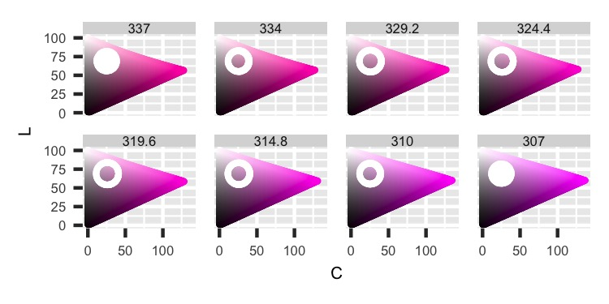

Follow-up from previous post using the HCL coordinates directly
R
Generative Art
Published
August 10, 2021
This blog post follows up on the previous one. Code in that post finds colors in the HCL color space by sampling points from a sphere centered on a base point. There’s a mismatch between how the sphere is determined (Cartesian coordinates of x, y, L) and the colors are parameterized (polar coordinates of H, C, L), so a conversion happens in the code.
This post looks into what happens if you just start with a “sphere” based on Hue, Chroma, Luminance values. So we’ll set up shapes that expand out from the base point along Hue, Chroma, and Luminance directly.1
Let’s first look at all our graphs for our base color. This time I’m picking pink. Next, we can see the C-L Plane, H-C Plane, and H-L Curve images to understand the color in the HCL color space.
Base Color: C-L Plane
Base Color: H-C Plane
Base Color: H-L Curve
Then we can look at the plane tangent to the H-L Curve to see the space perpendicular to the C-L plane.
C Tangent Plane setup
Base Color: Plane Perpendicular to C-L Plane
After the base color is understood, we can see what happens if you extend out to a sphere.
xyL Perimeter
We’ll only pull points on the perimeter for this code, unlike the previous post that had points randomly throughout the sphere. We’ll move away from the base point using the Cartesian coordinates of x, y, and L for the first main section. This is exactly what we did in the last post, so it should look familiar. The main new addition is cutting the shape into pieces and graphing them on facets.
Above, we see the basic information about the base color and the points sampled around the sphere’s perimeter (width is 15 units). Below, we see the sphere cut up by C-L Planes at different Hue values. We see that as we move across different values for our Hue, we slice through the sphere to get different shapes. For example, on the right image, the ends are moved left slightly, and the doughnuts in the middle values tend to have a little more width on the right side. The distortion occurs because our cuts are fanning across the sphere at an angle, not moving along in a straight line. So, one side gets a little more of the perimeter to plot.

xyL: C-L Plane by H cuts
xyL: C-L by H cuts
The next set shows the H-L Curve by different Chroma values. Here, we might expect to see circles, but instead, we get ovals. These shapes occur because the ring made by moving Hue through the sphere cuts along a curve, then it’s flattened for these facets. Also, technically the facets are a little off because the width of the graph should be increasing as Chroma increases. So even though they show the same Hue values, the arc length of the circle should be getting longer. Therefore the graphs should be getting wider.
xyL: H-L Curve by C cuts
xyL: H-L by C cuts
In the next set, we finally get our nice circles. As we slice through our sphere for different Luminance values, we get our circles in the H-C Planes.
xyL: H-C Plane by L cuts
xyL: H-C by L cuts
The following three images also have circles because we’re cutting our sphere along straight lines equal distances from each other. The first facet set looks at the sphere from up above as we cut through different Luminance values. This image is the same as the right side in the previous group, but each sub-image gets rotated, so the Hue angle moves flat left to right. The x-axis is the distance along the C-L Plane that cuts the sphere in half. This distance isn’t equivalent to Chroma because that moves at an angle determined by Hue, but it is related. The values are the Chroma values on the C-L Plane shifted in a straight line from the C-L Plane. The y-axis is the distance from the C-L Plane in either direction.
xyL: Parallel-Perpendicular Distances by L cuts
The next two images both have the Luminance values along the y-axis but cut the sphere differently. The left side slices the sphere moving out from the center of the HCL color space along the Chroma values. Here we see the nice circles instead of ovals for the images of the H-L cut by C. The right side cuts are made parallel to the C-L Plane and move along a straight line. We’re also getting circles that aren’t a little lop-sided, unlike the C-L cut by H ones.
xyL: Perpendicular Distance-L by Parallel Distance cuts
xyL: Parallel Distance-L by Perpendicular Distance cuts
HCL Perimeter
We’ll move away from the base color along Hue, Chroma, and Luminance for the second main section. So we’ll curve around when changing Hue values.
This first set of graphs plots the C-L plane split by Hue values with both the perimeter and where it fits in the color space. We see these nice circles as the perimeter is cut moving along Hue values.
HCL: C-L Plane by H cuts
HCL: C-L by H cuts
The next set shows H-L Curve split by different Chroma values. We’re also getting nice circles, unlike the xyL section.
HCL: H-L Curve by C cuts
HCL: H-L by C cuts
The following graph breaks the trend of nice circles. Here we see teardrop shapes instead. The next few images pull this apart a little more.
HCL: H-C Plane by L cuts
HCL: H-C by L cuts
Here we see the teardrop shapes in more detail. Because we created our “sphere” following polar coordinates, it doesn’t turn out as we might expect. This shape’s height is a function of what a sphere should be but augmented by the distance between Hue values increasing when Chroma increases. Notice that the center Chroma value is at 26. Not in the middle of the circular part, like at 30-ish.
HCL: Parallel-Perpendicular Distances by L cuts
We also get a squished version for the image on the left. There are fewer cuts because the shape doesn’t reach out as far as the image on the right.
HCL: Perpendicular Distance-L by Parallel Distance cuts
HCL: Parallel Distance-L by Perpendicular Distance cuts
It is a little unwieldy to compare the different main sections apart, so we’ll add them together in the next one.
Compare Perimeters
For the following images, the two sets we previously created are stuck together and then graphed to highlight the differences well.
This section will have graphs with points from the xyL function in blue and HCL in orange. In the left image, we see the lop-sidedness of the xyL points with the circles of the HCL ones. Also, we can easily see that the XYL points stretch out to farther Hue values. Then we have the ovals for xyL and circles for HCL.
Comparison: C-L by L cuts
Comparison: H-L by C cuts
Then we can see the circles for xyL and teardrops for HCL.
Comparison: H-C by L cuts
Comparison: Parallel-Perpendicular by L cuts
Finally, we get a comparison that confirms the HCL function results in squeezing the perimeter, not stretching it vertically.
Comparison: Perpendicular-L by Parallel cuts
Comparison: Parallel-L by Perpendicular cuts
Graphing the perimeters is nice to see what’s going on mathematically in the space, but the main result is in the end colors. So the last images of this main section show the direct colors of the samples.
The first comparison has the samples sorted by Hue for the columns, then within each column, sorted by Luminance. I can’t tell a huge difference, but the Hue values for xyL seem to stretch slightly more than HCL, and HCL has a little more gray.
Comparison: Samples H by L
The second comparison has the samples sorted by Hue (like the first comparison), then sorted by Chroma. To me, this looks very different for having the same colors in the same columns. The HCL square is a little grayer at the bottom.
Comparison: Samples H by C
For the final two main sections, we’ll change only the Chroma value. First, we’ll move everything closer to the center.
Lower Chroma Value
We’ll start by changing the base Chroma value from 26 to 16. Everything else is the same.
From these graphs, we can see everything is exaggerated. For example, the first two images have similar circles for HCL, but xyL is breaking apart and getting stretched.
Lower C: C-L by L cuts
Lower C: H-L by C cuts
Then we see the circles for xyL, but HCL has a very tight teardrop shape.
Lower C: H-C by L cuts
Lower C: Parallel-Perpendicular by L cuts
The same trend continues with the exaggeration for HCL.
Lower C: Perpendicular-L by Parallel cuts
Lower C: Parallel-L by Perpendicular cuts
Finally, we can compare the sampled colors directly.
Lower C: Samples H by L
Lower C: Samples H by C
Higher Chroma Value
For the last main section, we’ll set Chroma to 75.
This time, the results have a different shape. Now, HCL stretches out farther than xyL (but still in a circle).
Higher C: C-L by L cuts
Higher C: H-L by C cuts
The graphs from above show the stretching well. Instead of the teardrop shape, we now have ovals. At some point in increasing the Chroma value, the HCL function surpasses xyL.
Higher C: H-C by L cuts
Higher C: Parallel-Perpendicular by L cuts
We see the same trend continue here.
Higher C: Perpendicular-L by Parallel cuts
Higher C: Parallel-L by Perpendicular cuts
And finally, we can compare the examples again.
Higher C: Samples H by L
Higher C: Samples H by C
I think at the end of the post, I’m supposed to say one is better than the other, but I think they’re just different. It really depends on what you’re looking for in selecting colors. Looking at the colors is the best way to do that, but the other graphs help explain what is happening and determine the next steps.
Footnotes
If you understand the difference between polar and Cartesian coordinates pretty well, this blog post will be obvious to you. But I’m bad at math and needed to see a lot of graphs to understand what was happening. So I figured I’d throw this in a blog post.↩︎